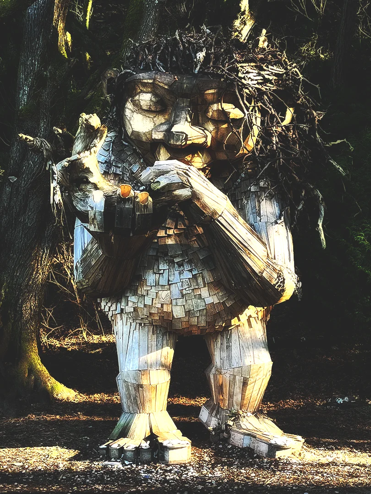
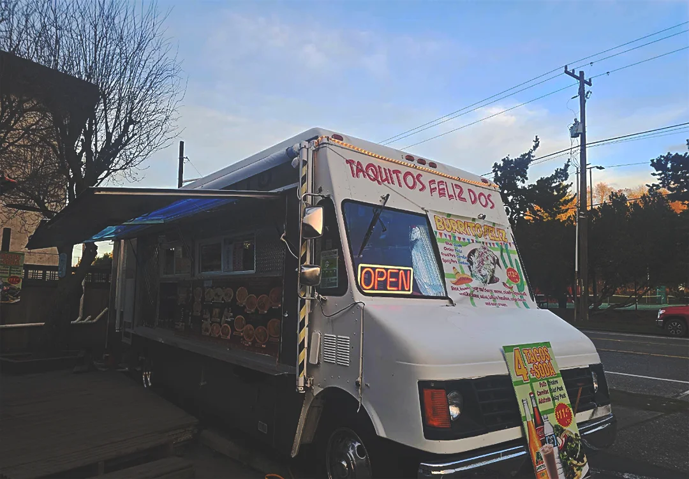
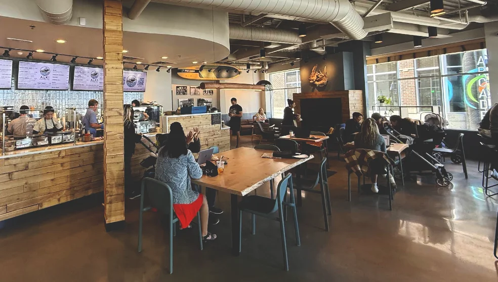
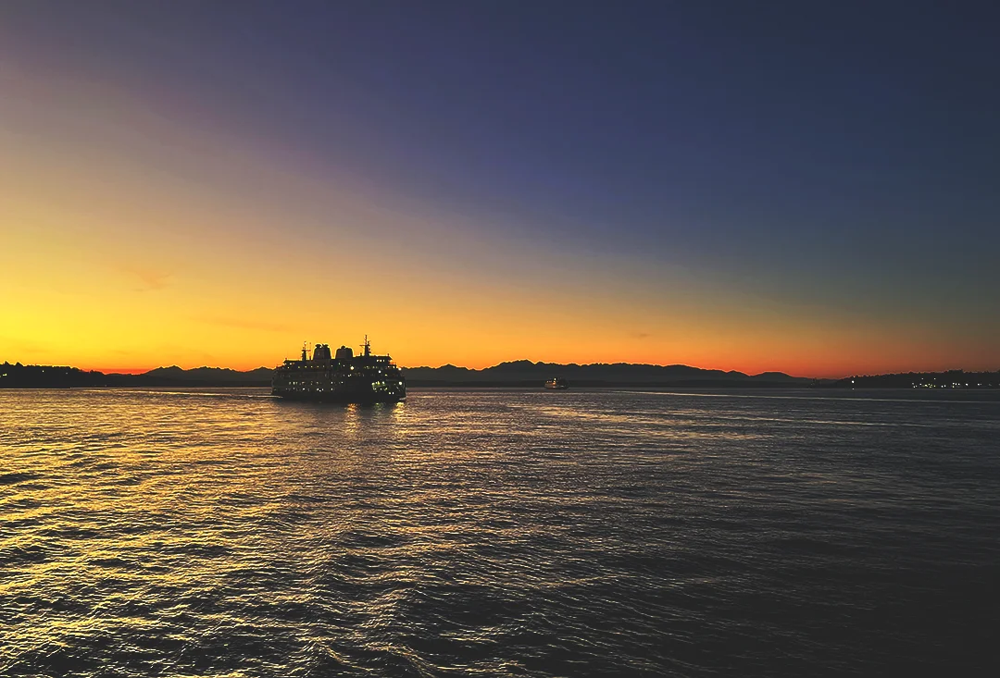
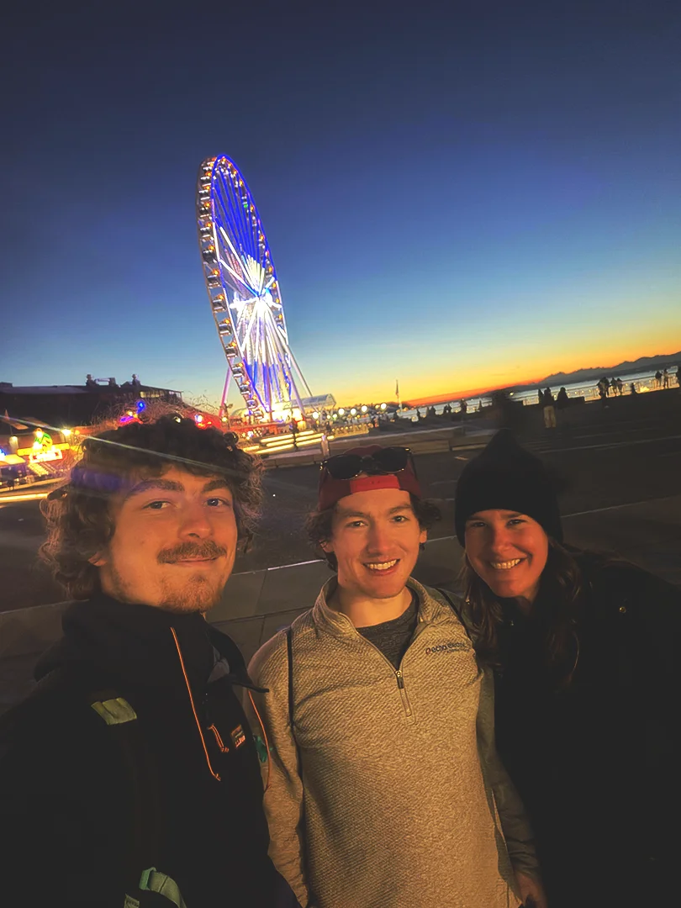

Day 5 - Troll Hunting With Marisa
Breakfast & Bus Stops
I stumbled into the kitchen just as the staff was putting the breakfast items away. I snagged some eggs and put the pan on the gas stove. Karma from the first morning's eggs caught up to me- the pan got too hot and the eggs stuck to the pan straight away. In lou of the incident, I decided to eat the non-burned eggs and supplemented it with cheese bits and coffee.
When Rhett got up he brought Marisa with and we all sat down to discuss our plans for the day. We didn't have a clue what we were doing. Marisa showed us the various trolls she had seen on her travels. She said she was going to visit the final one and asked if we wanted to come with. Rhett and I didn't need much time to think. We agreed, packed our bags and headed to the nearest bus stop.
Bruun Idun - Way of the Bird King
Waiting at the bus stop, I stepped into the Walgreens to get some lip balm, and upon exiting, I was greeted by a guy who was trying to hustle me for some detergent. I told him I would get it and hid in the store. Rhett and Marisa joined me, asking how we were going to get out of there. We decided to make a beeline towards the next bus stop. On the way out, the guy asked me if I had the detergent, but I told him I couldn't find it.
We did make it to the next stop, and took the bus south across the Duwamish Waterway, past West Seattle, and stopped just short of the Fauntleroy ferry. On the way, Marisa educated us about her job and how she was planning a golfing event while she knew nothing about it. She was from Florida but worked remotely, so between work, she planned trips across the world. This one happened to lead her to Seattle. I was very intrigued to learn this and wondered how I could explore a career path like hers.
It was a beautiful day to go into the woods of Lincoln Park. It was sunny and cool. Marisa did guide us in circles a few times, but eventually, we figured out that the beach is where we would find the troll. And what a troll it was! It looked very old and worn. I took a turn around it, admiring from all angles.

I wanted to go touch the saltwater and convinced Rhett and Marisa to go sit by the water while I waded in. The water was very chilly! Something came over me and I dunked my head in. Yes, it was worth it, feeling the same sensations as the whales, but it also made me very cold for the next couple hours!
Food & Further Travel
We decided we were hungry, so after finding some interesting specimens from the ocean, we headed north towards the only Mexican food truck in the area—Taquitos Feliz. There was a 76 gas station right next door, so I got some tea with my enchilada. But holy guacamole were those jalapeños spicy! I think getting milk would have been a better choice for my tongue.

It was mid afternoon by that time, and we felt like we had completed what we had come to do. Marisa smoked a cigarette and I did some pushups to try to get warm as we all waited for the bus.
Alki Coffee Co
After what seemed like an impossibly long time, the bus came around to come pick us up. We rode back north into Seaview, getting confused as to which bus we were supposed to be on. We got off pretty quickly at Alaska Street, gathered our bearings, and figured out which bus we should actually be on. We walked further north, checking out the local businesses and admiring some murals on the sides of the buildings.
We hopped on the next bus, and this one took us all the way to the edge of the water, along Beach Dr, turning into Alki Ave, where we stopped into Alki Coffee Co for a bathroom break and a treat. We waited there for a while, charging our phones and admiring the view of the Olympic mountains. The city was to our right, peeking around the corner. Marisa asked if we wanted to take the water taxi back to the city. I was definitely on board.

The Water Taxi
After we had charged our phones, consumed yet more caffeine, and watched a Lamborghini rev up and down the street, we saw a bus pull up just outside. We quickly packed up and made our way towards it, asking the bus driver if he was going to the water taxi. We learned he was not, but that the shuttle would be close behind. We decided to wait outside the cafe, thinking it was only going to be a few minutes. Those few minutes stretched into half an hour before boarding the green mini-bus.
I sat opposite Rhett and Marisa as we made our way around the coast towards the dock. It was a free ride and a few other people joined on the short journey. We rounded the corner and suddenly the boat was there. We thanked our driver and hustled toward the ferry.
The ticket agent was understanding of the fact we were tourists and let us on the taxi. There were two levels. I wanted to be outside to watch the sunset, so I stood at the railing while Rhett and Marisa were a bit warmer in the cabin. The announcements blared over the loudspeaker and we reversed into the Puget Sound.

I absolutely loved the experience! It was a beautiful cloudless evening, with Mt. Rainier to the east and the city right in front. The moon wasn't out yet, but I'm sure many photographers have been on the taxi just for the views of the mountain. I couldn't stop smiling as the cool air whipped through my hair and the delicious smell of the Pacific Northwest filled my nose.
Before I knew it, we had reached the city. Everybody deboarded (including pets and toddlers alike). I linked back up with Rhett and Marisa, heading down the dock and back towards the hostel. We stopped briefly to take a photo in front of the Ferris wheel. Walking further down the dock, we found the elevator next to the aquarium operational and rode to the top of the pier. Marisa sat down on a bench and Rhett and I took the cue. We socialized for a while, discussing our futures and how we liked Seattle so far. It was spaghetti night at the hostel, and Rhett and I found ourselves hungry. Marisa had plans with a friend to go out to dinner. Our trio made our way back to the hostel.

Finishing Out the Evening
Rhett and I consumed spaghetti while playing chess. We played three games—I was pleasantly surprised to have won all of them, the first game as white and the other two as black.
We were both tired from all the adventure that day, but we waited until Marisa got back to lounge around. We were up late talking, and it was too late to go down to the water, so Marisa watched as Rhett and I jogged around the block in sandals. We took showers upstairs and headed off to bed.